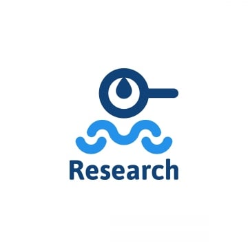
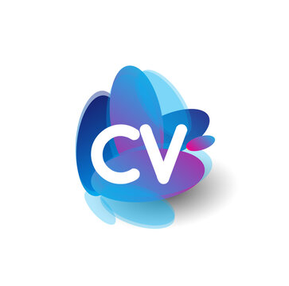
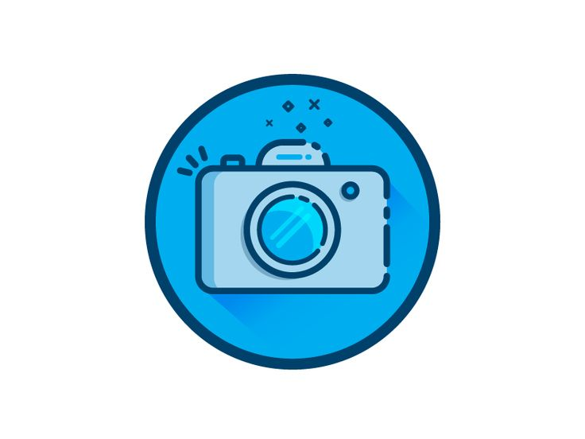
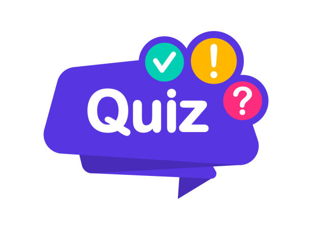

Welcome to our Website
we hope you will like it :-)
we hope you will like it :-)

Explore in-depth studies on internet infrastructure, web history, and regional statistics.
Learn More



This website was created by three female students as part of a collaborative project. It features a brief introduction about each of us, along with general information related to our topic.
To make things more interactive and fun, we've also included a mini quiz to test your knowledge. We hope you enjoy exploring our site and learning something new along the way!